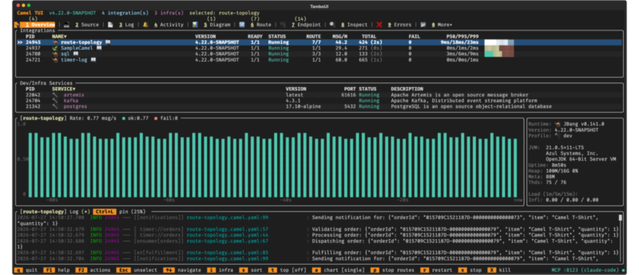
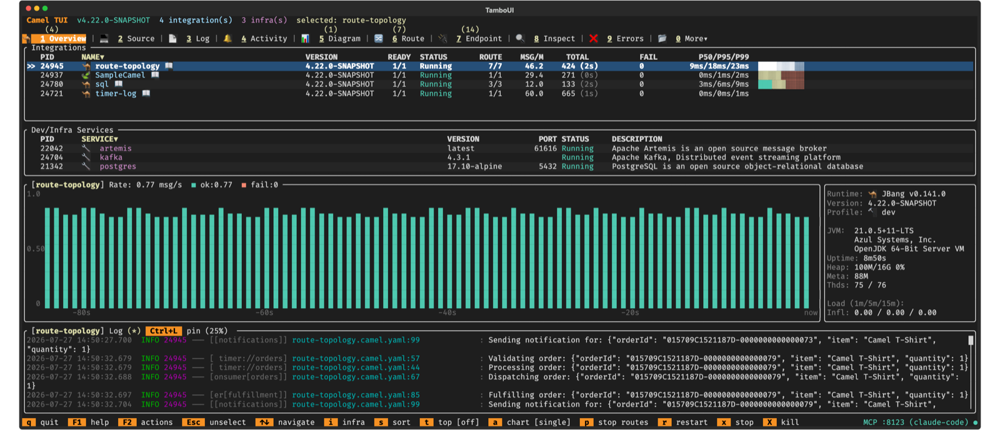
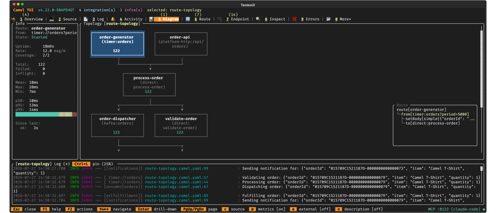
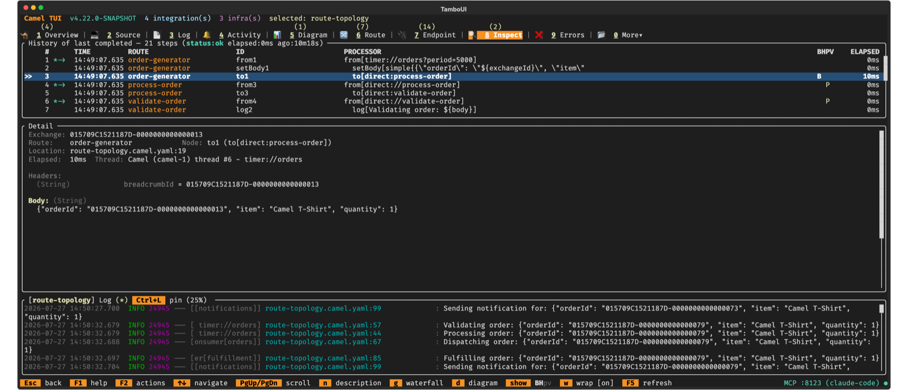
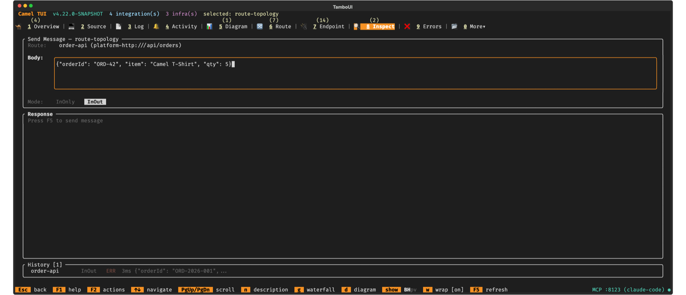

Apache Camel has always excelled at connecting systems, but observing what happens inside your running integrations has traditionally meant switching between CLI commands, log files, or firing up a web console. With Camel 4.21, we are introducing something new.
Camel TUI is an interactive terminal dashboard that gives you a live view of your Camel integrations as they run on your local machine. Built on top of the Camel CLI, it renders real-time data with a modern terminal UI — mouse support, keyboard navigation, Unicode graphics, and even pixel-rendered route diagrams.
From a single terminal window you can browse running integrations, watch routes process messages, drill into processors to find bottlenecks, inspect endpoints, check health status, and visualize route topology. A dedicated Top mode ranks routes and processors by processing time with inline bar charts — think htop, but for your integration flows.
This is a development and troubleshooting tool, not a production monitoring solution. It connects locally to Camel applications running on the same machine, and that is by design. The TUI is meant to sit alongside your workflow — whether you are coding in an IDE, iterating with camel run, or debugging a failing route.
But there is a bigger picture. As AI-assisted development moves from writing code to operating integrations, a gap emerges. AI agents working through MCP can inspect routes, read metrics, and reason about integration state programmatically. Humans cannot — at least not at that speed. Camel TUI bridges that gap. It gives developers the same level of visibility that an AI agent gets through tool calls: what routes are running, how fast they process, where errors occur, what the message flow looks like. When you are pair-programming with an AI agent, the TUI is your window into what the agent sees and what your integrations are actually doing.
Camel TUI is experimental and evolving fast. In this post, we walk through the key screens and show you how to get started.
Getting Started
You can start in two ways.
With your own route — start a Camel integration in one terminal, then open the TUI in another:
camel run my-route.yaml
camel tui
The TUI auto-discovers every running Camel integration on your machine. No configuration needed.
With a built-in example — don’t have a route yet? Open the TUI, press F2, and select Run an example. Browse the catalog, pick one, and press Enter. The example starts running in the background and the TUI selects it automatically. If the example needs infrastructure — Kafka, a database, a message broker — the TUI starts the required Docker containers for you.

What You See
The TUI organizes information into ten primary tabs, with fifteen more available under a More menu. Here are the highlights.
Activity
The Activity tab shows a live feed of every exchange flowing through the system — route, status, elapsed time, endpoint sends, and how long ago it completed. The top panel shows aggregated statistics: total and failed counts, p50/p95/max elapsed times, and the time window of the visible entries. Select an exchange to see its details below: the endpoints called, individual timings, and exception details if it failed.
Route Topology Diagram
The Diagram tab renders the route topology as interactive ASCII art. Routes appear as boxes connected by directed arrows — trigger routes at the top, downstream routes below. Select a route to see its metadata: state, uptime, throughput, exchange counts, and processing times.
Press Enter to drill down into a route’s internal EIP structure. Each processor node shows its type, endpoint URI, and per-node statistics. Nodes that connect to other routes show an indicator — press Enter to jump directly to the linked route. Press Esc to go back. The navigation history works like a breadcrumb stack, so you can explore deep multi-route flows and find your way back.
Press e to cycle external endpoints — off, edges only, or fully connected — to see how your routes interact with Kafka brokers, HTTP services, and databases.

Message Insight
The Inspect tab is where the TUI earns its keep. It lets you step through an exchange processor by processor — like scrubbing through a video timeline of your message’s journey.
The top panel lists every processing step with BHPV change indicators — letters light up in yellow when the Body, Headers, Properties, or Variables changed at that step. Select a step to see the full exchange state at that exact point in the processing chain.
Press g to switch to the waterfall view — a horizontal bar chart showing how long each processor took. Long bars stand out immediately, making bottlenecks obvious.
Press d to overlay the message path on the route topology diagram. Use Up/Down arrows to step forward and backward through the path while the diagram highlights the current processor and an info panel shows the exchange state. Values that changed from the previous step are highlighted in yellow. This is especially powerful for understanding complex multi-route flows where messages hop between routes through direct, seda, or Kafka endpoints.

Errors
The Errors tab collects failures with full stack traces and exchange context. When errors occur, a red badge appears on the tab. For deeper troubleshooting, switch to the Inspect tab and use the diagram replay — failed steps are highlighted in red on the diagram, and you can step through the failing exchange to see the message state at each processor leading up to the failure.
Beyond Read-Only
The TUI is not just a viewer. The F2 actions menu gives you quick access to:
- Send Message — send test messages to any route with custom body, headers, and exchange pattern. For InOut exchanges, the response is displayed with status, elapsed time, and response body.
- Run an example — browse and launch built-in Camel examples from the catalog.
- Run Dev/Infra Service — start infrastructure services (Kafka, databases, etc.) in Docker.
- Doctor — check your environment: Java version, JBang, Maven, Docker, port conflicts, disk space.
- Record — record your terminal session as a
.tapefile for demos and documentation. Convert to animated GIF with agg or VHS.

AI Integration
The TUI has AI built in. Press F8 to open the AI prompt panel — right there in the terminal, alongside your routes, diagrams, and metrics. Pick your provider and model, type a question, and the AI responds with full context of what is running. No tool switching, no copy-pasting log output into a chat window. The AI sees what you see.
The TUI also includes an embedded MCP (Model Context Protocol) server for external AI coding assistants. Start it with camel tui --mcp and connect your agent. Once connected, the agent gains the same visibility you have — and can act on it. It can read route topology, statistics, message traces, errors, and logs. It can navigate tabs, select routes, start and stop routes, and send test messages. It can even annotate the TUI screen — drawing boxes around failing routes, arrows between endpoints, and explanatory labels — turning the terminal into a live whiteboard for pair-programming.
Whether you use the built-in AI prompt or connect an external agent, the workflow is the same: ask “What routes are failing and why?” and the AI reads the errors, correlates with route statistics, steps through the failing exchange, and explains the root cause. Ask “Show me how this message flows through the system” and it opens the diagram replay, steps through each processor, and highlights the path while explaining what happens at each step.
AI integration is entirely optional — the TUI is fully functional without it. We will cover this in more detail in a dedicated follow-up post.
What’s Next
Camel TUI is in heavy development and evolving fast. The upcoming 4.22 release brings switchable themes — dark and light — so you can match the TUI to your terminal and preferences, along with many more features and improvements.
We will publish follow-up posts covering specific capabilities in depth — route diagrams, message tracing, OpenTelemetry visualization, and AI pair-programming.
To try it now:
camel tui
For the full reference, see the Camel TUI documentation.
About the screenshots
Every screenshot in this blog post was generated by an AI agent (Claude Code) controlling the TUI through its embedded MCP server. The agent started the TUI with camel tui --mcp, connected as an MCP client, then navigated tabs, selected routes, typed text into input fields, and triggered the built-in screenshot action — all programmatically, without a human touching the keyboard. The TUI saved each screenshot as SVG, and the agent converted them to PNG.
This is exactly the kind of AI-assisted workflow the TUI was designed to enable.